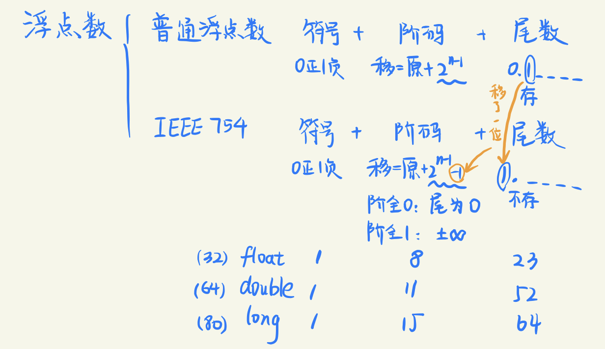
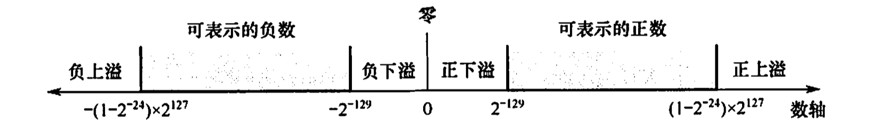
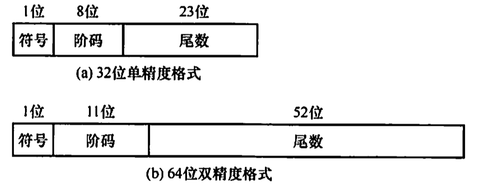

2022.08.31
视频推荐：
- 十分钟搞定期末与考研常考的普通浮点数与IEEE754浮点数

$$ N = (-1)^S\cdot M\cdot R^E $$
32位浮点数格式（基数默认为2）：
| 数符(0) | 阶码(1-7) | 尾数(8-31) |
|---|---|---|
| 共1位 | 移码，偏执值为64，共7位 | 原码，共24位 |
正数（0.1xxxx）：最大值0.1111···1，最小值0.100···0，范围$0\cup[2^{-1}\cdot 2^{-128},(1-2^{-24})\cdot 2^{127}]$
负数（1.1xxxx）：最小值1.1111···1，最大值1.100···0，范围$[-(1-2^{-24})\cdot 2^{127} ,-2^{-1}\cdot 2^{-128}]\cup 0$
上溢：进行中断处理
下溢：当作0处理

注意⚠️：
正数尾数最小值，负数尾数最大值，需要是x.1xxxxx！（基数为2时）
注意负数的上溢下溢范围！
左规：出现 $\pm$ 0.000···0时，尾数左移n位，阶码减n
右规：尾数有效位进位到小数点前边，尾数右移1位，阶码加1
基数为2时，原码规格化形式的尾数最高位是1
基数为4时，原码规格化形式的尾数最高两位不全为0
A.1.11000
B.0.01110
C.0.01010
D.1.00010
【答案】：D
A.1.001101
B.0.001101
C.1.011011
D.0.000010
【答案】：C
①阶码上溢出。一个正指数超过了最大允许值时，浮点数发生上溢出（即向∞方向溢出)。若结果是正数，则发生正上溢出（有的机器把值置为+∞）；若结果是负数，则发生负上溢出（有的机器把值置为-∞）。这种情况为软件故障，通常要引入溢出故障处理程序来处理。
②阶码下溢出。一个负指数比最小允许值还小时，浮点数发生下溢出。一般机器把下溢出
时的值置为0(+0或-0)。不发生溢出故障。
③尾数溢出。当尾数最高有效位有进位时，发生尾数溢出。此时，进行“右规”操作：尾数右移一位，阶码加1，直到尾数不溢出为止。此时，只要阶码不发生上溢出，浮点数就不会溢出。
④非规格化尾数。当数值部分高位不是一个有效值时（如原码时为0或补码时与符号位相同)，尾数为非规格化形式。此时，进行“左规”操作：尾数左移一位，阶码减1，直到尾数为规格化形式为止。

阶码：原码数值+偏执值
尾数：带隐藏位的原码
| 类型 | 数符 | 阶码 | 尾数数值 | 总位数 | 偏执值 |
|---|---|---|---|---|---|
| 短浮点数 | 1 | 8 | 23 | 32 | 7FH(127) |
| 长浮点数 | 1 | 11 | 52 | 64 | 3FFH(1023) |
| 临时浮点数 | 1 | 15 | 64 | 80 | 3FFFH(16383) |
记忆方案：
Float 32 -> 8 + (1+23)，（和前边的浮点数一样，只不过有了隐含位）
Double 64 -> 11 + 52 + 1, “一生一世我爱你”
临时浮点数 80 -> (1+15) + 64
8 11 15，“八十一是我，王氏一是你”
23 52 64
注意⚠️：
这里的偏执值是 $2^k-1$ ，和普通的移码不一样！（普通的移码没有减1！）
$$ (-1)^S\cdot 1.M \cdot 2^{E-127}\ (-1)^S\cdot 1.M \cdot 2^{E-1023}\ (-1)^S\cdot 1.M \cdot 2^{E-16383} $$
小结：
| 内容 | 阶码 | 尾数 |
|---|---|---|
| 浮点数 | 原码+偏置值$2^n$ | 原码（0.1abcd,保存1abcd） |
| IEEE 754 | 原码+偏置值$2^n-1$ | 原码（带隐藏位:1.abcd,保存abcd） |
例题：
| 符号位(1) | 阶码(11) | 尾数(52) |
|---|---|---|
| 1 | 11111111110 | 111...1111 |
| 阶码全1代表无穷 | ||
| 阶码尾数全0代表0 |
$$ \begin{align} &-1.111...111(52个1)\cdot 2^{111,1111,1110(10个0)-1023(偏执值)}\ &= -(2-2^{-52})\cdot 2^{2046-1023=1023} \end{align} $$
⚠️注意隐藏位是小数点前哦～，就是说IEEE754的标准形式的尾数是1.xxxx，然后小数点前的1隐藏，但是前边的普通浮点数的标准形式是0.1xxxx，1不隐藏！
对于二进制10001111111011111100000000000000，
1)表示一个补码整数，其十进制值是多少？ $$ \begin{align} &1111,0000,0001,0000,0100,0000,0000,0000_补\ =&1000,1111,1110,1111,1100,0000,0000,0000_原\ =&-(2^{20}-2^{14}+2^{28}-2^{21}) \end{align} $$ 2)表示一个无符号整数，其十进制值是多少？ $$ \begin{align} &1000_{31:28},1111_{27:24},1110_{23:20},1111_{19:16},1100_{15:12},0000_{11:8},0000_{7:4},0000_{3:0}\ =&2^{20}-2^{14}+2^{28}-2^{21}+2^{31} \end{align} $$ 3)表示一个IEEE754标准的单精度浮点数，其值是多少？ $$ \begin{align} &1,0001 1111,1101 1111 1000 0000 0000 000\ =&-2^{31-127}\cdot 1.110111111\ =&-2^{-96}\cdot (2-2^{-3}-2^{-9}) \end{align} $$
1)i=(int)((double)i)
是的
2)f=(float)((int)f)
不是
3)f=(float)((double)f)
是的
4)d=(double)((float)d)
不是
1) 寄存器A和B中的内容分别是什么？
$$ \begin{align} &-68\ =&-1000100H\cdot2^{0}\ =&-1.000100H\cdot2^{6}\ =&1,1000 0101(6+127),0001\ =&C2880000 \end{align} $$
$$ \begin{align} &-8.25\ =&-1000.01H\cdot2^{0}\ =&-1.00001H\cdot2^{3}\ =&1,1000 0010(3+127),00001\ =&C1040000 \end{align} $$
2)X和Y相加后的结果存放在C寄存器中，寄存器C中的内容是什么？ $$ \begin{align} &-(1.000100H\cdot2^{6}+1.00001H\cdot2^{3})\ =&-(1.000100H\cdot2^{6}+0.00100001H\cdot2^{6})\ =&-(1.00110001H\cdot2^{6})\ =&1,1000 0101(6+127),00110001\ =&C2988000 \end{align} $$ 3)X和Y相减后的结果存放在D寄存器中，寄存器D中的内容是什么？ $$ \begin{align} &1.00001H\cdot2^{3}-1.000100H\cdot2^{6}\ =&0.00100001H\cdot2^{6}-1.000100H\cdot2^{6}\ =&-(1.00010000H\cdot2^{6}-0.00100001H\cdot2^{6})\ =&-(0.11101111H\cdot2^{6})\ =&-(1.1101111H\cdot2^{5})\ =&1,1000 0100(5+127),1101111\ =&C26F0000 \end{align} $$
int f1(unsigned n){
int sum=1, power=1;
for(unsigned i=0;i<n-1;i++){
power *= 2;
sum += power;
}
return sum;
}
将f1中的int都改为float,可得到计算f(n)的另一个函数f2。假设unsigned和int型数据都占32位，float采用IEEE754单精度标准。请回答下列问题：
1)当n=0时，f1会出现死循环，为什么？若将f1中的变量i和n都定义为int型，则f1是否还会出现死循环？为什么？
【答案】：因为n=0时，n=0000..000，n为无符号数，n-1=111...111，变成了最大的数。改成int就不会了，因为int可以表示负数。
2)f1(23)和f2(23)的返回值是否相等？机器数各是什么（用十六进制表示)？
【答案】
f1(23): 0000,0000,1111,1111,1111,1111,1111,1111（24个1）
f1(23): $00FFFFFFH$
f2(23): 0,10010110(23+127=149=128+16+4+2),11111111111111111111111(23个1)
f2(23): $4B7FFFFFH$
3)f1(24)和f2(24)的返回值分别为33554431和33554432.0，为什么不相等？
【答案】
f1(23): 0000,0001,1111,1111,1111,1111,1111,1111（25个1）
f1(23): $00FFFFFFH$
f2(23): 0,10010110(24+127=149=128+16+4+2+1),11111111111111111111111(24个1)
尾数只有23位，需要舍入一位，这里是入
f2(23): 0,10010110(25+127=149=128+16+8),0
4)f(31)=$2^{32}-1$,而f1(31)的返回值却为-1，为什么？若使f1(n)的返回值与f(n)相等，则最大的n是多少？
【答案】
f1(31) = 111..111(32个1)
计算机采用补码存储int，兑换成原码是1,000..0001，代表-1
最大的n是30
5)f2(127)的机器数为7F800000H,对应的值是什么？若使f2(n)的结果不溢出，则最大的n是多少？若使f2(n)的结果精确（无舍入），则最大的n是多少？
【答案】 $$ \begin{align} &7F800000\ =&0111,1111,1000,0\ =&+\infty \end{align} $$ 1.111..1111小数点后23个1。一共24个1，n最大为23
(1)数值的表示范围
若定点数和浮点数的字长相同，则浮点表示法所能表示的数值范围远大于定点表示法。
(2)精度
对于字长相同的定点数和浮点数来说，浮点数虽然扩大了数的表示范围，但精度降低了。
(3)数的运算
浮点数包括阶码和尾数两部分，运算时不仅要做尾数的运算，还要做阶码的运算，而且运算结果要求规格化，所以浮点运算比定点运算复杂。
(4)溢出问题
在定点运算中，当运算结果超出数的表示范围时，发生溢出；浮点运算中，运算结果超出尾数表示范围却不一定溢出，只有规格化后阶码超出所能表示的范围时，才发生溢出。
对阶的目的是使两个操作数的小数点位置对齐，即使得两个数的阶码相等。为此，先求阶差，然后以小阶向大阶看齐的原则，将阶码小的尾数右移一位（基数为2），阶加1，直到两个数的阶码相等为止。尾数右移时，舍弃掉有效位会产生误差，影响精度。
将对阶后的尾数按定点数加（减）运算规则运算。运算后的尾数不一定是规格化的，因此，浮点数的加减运算需要进一步进行规格化处理。
IEEE754规格化尾数的形式为±1.×...×。尾数相加减后会得到各种可能结果，例如：
1.×...×+1.×...×=±1×,×...×
1.×...×-1.×...×=±0.0...01×...×
1)右规：当结果为±1×.×…×时，需要进行右规。尾数右移一位，阶码加1。尾数右移时，最高位1被移到小数点前一位作为隐藏位，最后一位移出时，要考虑舍入。
2)左规：当结果为士0.0…01×…×时，需要进行左规。尾数每左移一位，阶码减1。.可能需要左规多次，直到将第一位1移到小数点左边。
注意：①左规一次相当于乘2，右规一次相当于除2；②需要右归时，只需进行一次
在对阶和尾数右规时，可能会对尾数进行右移，为保证运算精度，一般将低位移出的两位保留下来，参加中间过程的运算，最后将运算结果进行舍入，还原表示成IEEE754格式。
常见的舍入方法有：0舍1入法、恒置1法和截断法（恒舍法）。
截断法：直接截取所需位数，丢弃后面的所有位，这种舍入处理最简单。
溢出判断
在尾数规格化和尾数舍入时，可能会对阶码执行加/减运算。因此，必须考虑指数溢出的问题。若一个正指数超过了最大允许值（127或1023)，则发生指数上溢，产生异常。若一个负指数超过了最小允许值(-149或-1074)，则发生指数下溢，通常把结果按机器零处理。
1)右规和尾数舍入。数值很大的尾数舍入时，可能因为末位加1而发生尾数溢出，此时需要通过右规来调整尾数和阶。右规时阶加1，导致阶增大，因此需要判断是否发生了指数上溢。当调整前的阶码为11111110时，加1后，会变成11111111而发生指数上溢。
2)左规。左规时阶减1，导致阶减小，因此需要判断是否发生了指数下溢。其判断规则与指数上溢类似，左规一次，阶码减1，然后判断阶码是否为全0来确定是否指数下溢。由此可见，浮点数的溢出并不是以尾数溢出来判断的，尾数溢出可以通过右规操作得到纠正。运算结果是否溢出主要看结果的指数是否发生了上溢，因此是由指数上溢来判断的。
注意：某些题目可能会指定尾数或阶码采用补码表示。通常采用双符号位，当尾数求和结果溢出（如尾数为10.×…×或01.××…×）时，需右规一次；当结果出现00.0××…×或11.1××…×时，需要左规，直到尾数变为00.1××…×或11.0××…×。
例题
【例题】下列关于对阶操作说法正确的是()。
A. 在浮点加减运算的对阶操作中，若阶码减小，则尾数左移
B. 在浮点加减运算的对阶操作中，若阶码增大，则尾数右移；若阶码减小，则尾数左移
C. 在浮点加减运算的对阶操作中，若阶码增大，则尾数右移
D. 以上都不对
答案：C。⚠️这道题说的是浮点数对阶操作中！小阶向大阶对齐
【例题】设浮点数共12位。其中阶码含1位阶符共4位，以2为底，补码表示；尾数含1位数符共8位，补码表示，规格化。则该浮点数所能表示的最大正数是()。
答案：$2^7\cdot(1-2^{-7})=2^7-1$。⚠️只有IEEE754才有隐藏位呢！阶码最大：$2^3-1=7$；尾数最大：$0.1111111=1-2^{-7}$
【例题】采用规格化的浮点数最主要是为了(D)。
A.增加数据的表示范围.
B.方便浮点运算
C.防止运算时数据溢出
D.增加数据的表示精度
【例题】下列关于舍入的说法，正确的是()。
Ⅰ.不仅仅只有浮点数需要舍入，定点数在运算时也可能要舍入
Ⅱ.在浮点数舍入中，只有左规格化时可能要舍入
Ⅲ.在浮点数舍入中，只有右规格化时可能要舍入
Ⅳ.在浮点数舍入中，左、右规格化均可能要舍入
V.舍入不一定产生误差
答案：只有V：只有浮点数有舍入的概念。舍入的两种情况：对阶&规格化
【2009统考真题】浮点数加、减运算过程一般包括对阶、尾数运算、规格化、舍入和判断溢出等步骤。设浮点数的阶码和尾数均采用补码表示，且位数分别为5和7（均含2位符号位)。若有两个数X=2^7×29/32 和Y=2^5x5/8，则用浮,点加法计算X+Y的最终结果（）。 A. 00111 1100010 B. 00111 0100010 C. 01000 0010001 D. 发生溢出 答案：D $$ \begin{align} X&=2^7\times 29/32\ Y&=2^5\times 5/8=2^7\times 5/32\ X+Y&=2^7\times 34/32=0,00111,溢出(2^5不够用了) \end{align} $$
【2011统考真题】float型数据通常用IEEE754单精度格式表示。若编译器将float型变量x分配在一个32位浮点寄存器FR1中，且X=-8.25,则FR1的内容是（)。
A.C1040000H
B.C2420000H
C.C1840000H
D.C1C20000H
答案：A。⚠️要化成1.xxx才是规格化！不是0.1xxx。。 $$ \begin{align} &-8.25\ &=[1][阶码][8.25]\ &=[1][阶码][1000.01]\ &=[1][127+3][1.00001]\ &=[1][10000010][00001]\ &=1100|0001|0000|0100|...\ &=C1040000H \end{align} $$
【2012统考真题】float类型（IEEE754单精度浮点数）能表示的最大整数是？
答案：⚠️阶码全是1，尾数全是零的时候代表正负无穷！代表普通的数字需要阶码<全是1的情况 $$ \begin{align} &0[11111110][1111...111]\ \to&11111110=254-127=127\ \to&2^{127}\cdot 1.111...111\ &=2^{127}\cdot(2-2^{-23})\ &=2^{128}-2^{104} \end{align} $$
【2013统考真题】某数采用IEEE754单精度浮点数格式表示为C6400000H,该数的值是：
答案： $$ \begin{align} &C6400000\ &=1100,0110,0100,0000,0000,0000,0000,0000\ &=-2^{10001100_B-127}\cdot 1.10000000000000000000000_B\ &=-1.5\cdot2^{13} \end{align} $$
【2014统考真题】float型数据常用IEEE754单精度浮点格式表示。假设两个float型变量x和y分别存放在32位寄存器f1和f2中，若(f1)=CC90 0000H,(f2)=B0C0 0000H,则x和y之间的关系为()。
A.x<y且符号相同
B.x<y且符号不同
C.x>y且符号相同
D.x>y且符号不同 $$ CC900000H\ 1100 1100 1001 0000 0000 0000 0000 0000\ -2^{26}\cdot 1.125\ B0C00000H\ 1011 0000 1001 0000 0000 0000 0000 0000\ -2^{-30}\cdot 1.125\ $$ 答案：A
【2015统考真题】下列有关浮点数加减运算的叙述中，正确的是( )。
I.对阶操作不会引起阶码上溢或下溢 Ⅱ.右规和尾数舍入都可能引起阶码上溢 Ⅲ.左规时可能引起阶码下溢 IV.尾数溢出时结果不一定溢出
A.仅Ⅱ、III
B.仅I、Ⅱ、IV
C.仅I、Ⅲ、IV
D.I、Ⅱ、Ⅲ、IV
答案：对阶是较小的阶码对齐至较大的阶码，I正确。右规和尾数舍入过程，阶码加1而可能上
溢，Ⅱ正确，同理IⅡ也正确。尾数溢出时可能仅产生误差，结果不一定溢出，V正确。D
【2018统考真题】IEEE754单精度浮点格式表示的数中，最小的规格化正数是( )。
A.$1.0×2^{-126}$
B.$1.0×2^{-127}$
C.$1.0×2^{-128}$
D.$1.0×2^{-149}$
答案：A
阶码:$00000001 = 1-127 = -126$
【2020统考真题】已知带符号整数用补码表示，float型数据用IEEE754标准表示，假
定变量x的类型只可能是int或float,当x的机器数为C8000000H时，x的值可能是()
A.$-7×2^{27}$
B.$-2^{16}$
C.$2^{17}$
D.$25×2^{27}$
答案：A $$ \begin{align} &C8000000_{int}\ =&1100 1000 0000 0000 0000 0000 0000 0000_{补码}\ =&1011 1000 0000 0000 0000 0000 0000 0000_{原码}\ =&- 7 \cdot 2^{27}\ =&C8000000_{float}\ =&1100 1000 0000 0000 0000 0000 0000 0000\ =&1,1001 0000,0\ =&-2^{17} \end{align} $$
【2021统考真题】下列数值中，不能用IEEE754浮点格式精确表示的是()。
A.1.2
B.1.25
C.2.0
D.2.5
答案：A